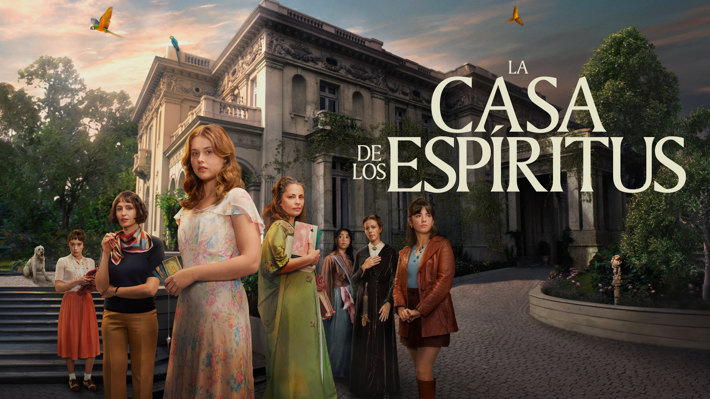

La casa de los espíritus

Es imposible hablar de la literatura latinoamericana sin toparse con este nombre. Hayas leído mucho o poco sobre realismo mágico, seguro has escuchado hablar de la familia Trueba. Publicada en 1982, La casa de los espíritus no solo consagró a Isabel Allende a nivel mundial, sino que se convirtió de inmediato en un clásico indiscutible y en una de las obras más leídas y queridas de nuestras letras.
A través de cuatro generaciones marcadas por pasiones intensas, secretos y clarividencia, la novela recorre la transformación de una familia que es, en el fondo, el reflejo de todo un país. Allende mezcla con maestría la cotidianidad con lo sobrenatural, presentándonos a personajes inolvidables como la clarividente Clara o el temperamental Esteban Trueba, dentro de un hogar donde los espíritus y la historia viva conviven bajo el mismo techo.
“La memoria es frágil y el transcurso de una vida es muy breve y sucede todo tan de prisa, que no alcanzamos a ver la relación entre los acontecimientos…”
Esta no es solo una saga familiar con toques fantásticos; es una reflexión profunda sobre la memoria, la reconciliación y el peso de las decisiones que heredamos. Muestra cómo el amor, el rencor y la búsqueda de justicia se entrelazan a través del tiempo, recordándonos que el destino colectivo suele construirse desde las emociones más íntimas del hogar.
“No hay que temer a los muertos, sino a los vivos.”
Una narración envolvente, cargada de fuerza femenina, contrastes sociales y una sensibilidad única que atrapa desde la primera página. Una historia viva, emotiva y lúcida que demuestra cómo el pasado y el presente dialogan siempre entre sí. Un clásico imprescindible que deja huella en quien lo lee.
Comentarios